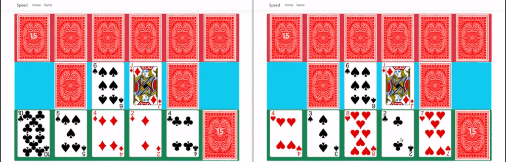

California Speed Game
Technologies used: .NET, C#, HTML5, Bootstrap, SignalR, and JQUERY
Visit RepoThis group project utilized SignalR for websockets in order to have high speed communication between two players. The player is able to drag and drop cards onto the piles within the rules of the game of California Speed. My role in this project was creating the initial game UI layout and creating the logic that prevents a deadlock between both players if no cards in their hands' are able to be played on the current play piles in the middle. A particular challenge I faced while writing the deadlock logic was figuring out how my functions needed to be written in order to communicate with our controller and model. I solved this issue by working with teamates and learning how the MVC pattern works resulting in me being able to complete my deadlock functions.
Play Pile Deadlock Prevention Code
//Used to check if both players' hand of cards are playable on the current play piles.
//If not both players' hand of cards are reshuffled
public void playPilesPlayable()
{
Card newPlayPileCard;
while(!playerHandPlayable(PlayerOneHand) && !playerHandPlayable(PlayerTwoHand))
{
if(PickPileOne.Count() == 0 || PickPileTwo.Count() == 0)
{
Reshuffle();
Console.WriteLine("Reshuffled deck");
}
newPlayPileCard = PickPileOne.Last();
moveCard(PlayPileOne, PickPileOne, newPlayPileCard);
newPlayPileCard = PickPileTwo.Last();
moveCard(PlayPileTwo,PickPileTwo, newPlayPileCard);
Console.WriteLine("Drew new cards for playPiles");
}
}
//Used to check a specified players current hand against both play piles to see if any of their cards are able to be played
public bool playerHandPlayable(List playerHand)
{
bool pileOnePlayable = false;
bool pileTwoPlayable = false;
//Check the players' hand against both play piles
foreach (var card in playerHand)
{
if ((card.Value + 1) % 13 == PlayPileOne.Last().Value || (PlayPileOne.Last().Value + 1) % 13 == card.Value)
{
pileOnePlayable = true;
}
if ((card.Value + 1) % 13 == PlayPileTwo.Last().Value || (PlayPileTwo.Last().Value + 1) % 13 == card.Value)
{
pileTwoPlayable = true;
}
}
if(pileOnePlayable || pileTwoPlayable)
{
return true;
}
return false;
}
//Moves specified card from an origin pile to a destination pile
public void moveCard(List destinationPile, List originPile, Card takenCard )
{
//Specified card to be moved
Card card = takenCard;
//Moves the specified card to the specified destination pile
destinationPile.Add(card);
//Removes the specified card from the origin pile
originPile.Remove(card);
}